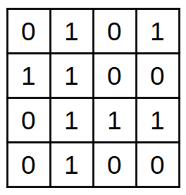
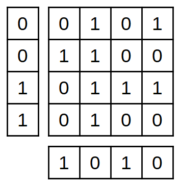
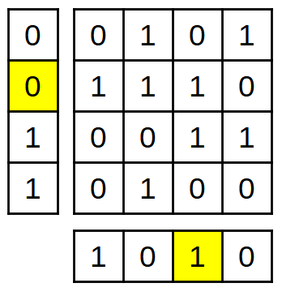
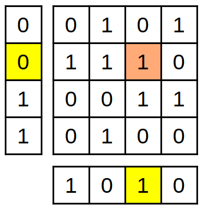
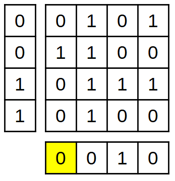

3. Correcció d'errors¶
Els bits de redundància addicionals no només poden detectar errors de transmissió, sinó que també són capaços de corregir els errors detectats.
Hi ha molts sistemes que només poden transmetre la informació una vegada, no permeten tornar a sol·licitar les dades adequades (televisió digital terrestre, televisió per satèl·lit, etc.). Els mitjans físics com el CD-ROM, els records USB o els discos SSD tenen el mateix problema, un cop corrompuda la informació, l’emissor no es pot tornar a sol·licitar.
En tots aquests casos no n’hi ha prou amb detectar errors, també cal corregir -los a partir de la informació rebuda.
Correcció d'errors amb bits de paritat¶
L’exemple més senzill d’un codi que corregeix els errors és un sistema amb doble paritat, horitzontal i vertical. Aquest exemple no s’utilitza a la pràctica per corregir els errors, però és molt més fàcil visualitzar que altres codis més capaços i molt més complexos.
Comencem amb una taula amb 16 bits d’informació (4x4):
{kind=link}

16 bits de dades.¶
A aquesta taula afegim 4 bits de paritat horitzontalment i altres 4 bits de paritat vertical:
{kind=link}

16 bits de dades envoltats de 8 bits de paritat, sense errors.¶
Un cop formada la taula, podem transmetre -la i amb la informació redundant podem detectar i corregir qualsevol error d’un sol bit.
Si es produeix un error en un bit de dades, la informació de paritat no serà correcta sobre un bit de paritat de fila i no serà correcta en un bit de paritat de la columna:
{kind=link}

16 bits de dades amb un error en una mica, envoltats de 8 bits de paritat dels quals 2 no estan d’acord amb les dades.¶
Això indica que el bit correspon a aquesta fila i aquesta columna ha canviat:
{kind=link}

Bits de paritat que indiquen un error groc, una mica errònia en taronja.¶
Amb aquesta informació, podem corregir el bit erroni per tornar a la taula original.
D'altra banda, si el que canvia per error és una mica de paritat, només aquest bit serà el que no coincideix amb la taula. La resta de bits de paritat seran correctes, cosa que indica que és el bit solitari que ha canviat:
{kind=link}

Paritat errònia bit de groc. És l’únic que no està d’acord amb els altres.¶
Amb aquesta informació, podem corregir el bit de paritat errònia per tornar a la taula original:
16 bits de dades envoltats de 8 bits de paritat, sense errors.¶
Codis de correcció d'errors¶
Els codis de correcció d’errors <https://es.wikipedia.org/wiki/fec>`__ utilitzats a la pràctica són capaços de corregir ràfegues de diversos bits equivocats al mateix bloc d’informació.
Els codis correctius més populars són els següents:
-
Són els més senzills d’implementar i els més antics. S'han utilitzat en CD, DVD, TV digital, ADSL, etc.
`Codis Convoluccionals. <https://es.wikipedia.org/wiki/c%C3%B3digo_convolucion
Empleats en xarxes telefòniques mòbils GSM, xarxes antigues de WI -FI o en sondes espacials.
-
Els empleats en comunicacions per satèl·lit i xarxes de telefonia mòbil 3G. Tenen el desavantatge de ser patentats.
-
Són els més recents. S’utilitzen a les xarxes Wi -Fi més modernes, en telefonia mòbil 5G, a les xarxes Ethernet es cauen més ràpidament i en les darreres versions de la televisió digital.
Exercicis¶
Escriviu el vostre nom en un full de paper.
Al full, dibuixa i empleneu la taula de bits 4x4 següents amb dades binàries (zero o un) aleatòries, deixant un forat en un dels quadrats.
Ompliu per sota dels bits de paritat de cada fila i cada columna tenint en compte que, a la bretxa lliure, hi hauria d’haver -ne un (1).
Escriviu un zero (0) al forat que queda abans. Aquest serà l’error de transmissió.
Intercanvi la taula amb un company de classe de manera que cadascú indica amb un cercle on es troba l'error a l'altra taula.
Dibuixeu i empleneu la taula de bits 4x4 següents amb dades binàries aleatòries.
Ompliu per sota dels bits de paritat de cada fila i cada columna tenint en compte que heu d’escriure un viceversa del que val la pena (error en un bit de paritat).
Intercanvi la taula amb un company de classe de manera que cadascú indica amb un cercle on es troba l'error a l'altra taula.
Els codis de correcció d’errors utilitzats en aplicacions reals. Quants bits errònics poden corregir a cada bloc de dades? Investiga a Internet i explica la resposta.
Escriviu el nom de tres codis de correcció d’errors utilitzats en sistemes reals i escriviu dues aplicacions de cadascuna d’elles.
{kind=link}